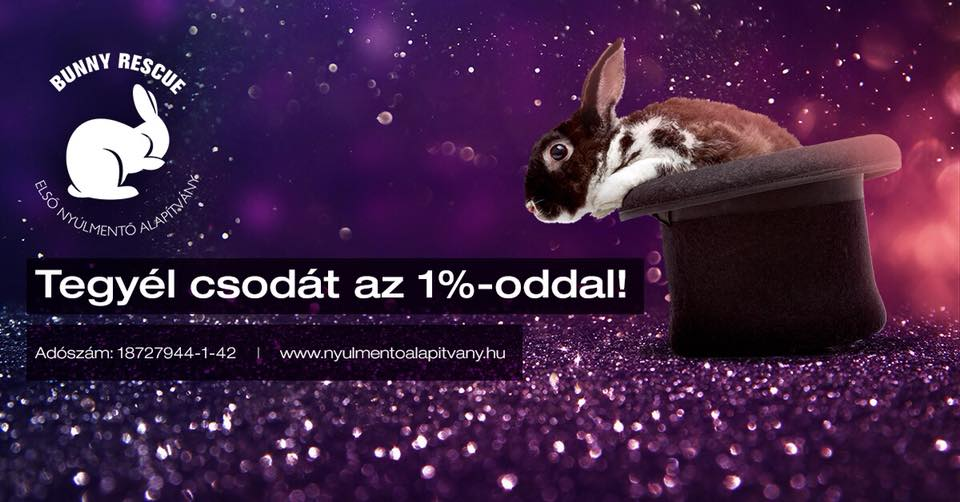

Rólunk
Alapítványunk mentett nyuszik rehabilitációjával és örökbeadásával foglalkozik. Ha nem tudod tovább magadnál tartani nyuszidat, őt is gondozásunkba vesszük. A nyuszik örökbefogadásukig tagjainknál, valamint ideiglenes gazdiknál vannak gondozva és rehabilitálva, míg megtaláljuk nekik új, szerető otthonukat.
Több száz sikeres örökbeadás és rehabilitált nyuszi után, lehet, hogy Te is nálunk találod meg hálás és szerető kedvencedet!
Az Első Nyúlmentő Alapítvány 2014-ben kezdte el munkáját. Az évek során néhány lelkes nyuszigazdiból, egy professzionális színvonalú, országos támogatói hálózattal rendelkező szervezetté váltunk. Az úton folyamatos tanulással és fejlődéssel értük el azt, hogy az elmúlt fél évtizedben több, mint 800 nyuszit segítettünk új gazdihoz.
A bajba jutott, utcára kitett, nyuszik mellett az edukációra is nagy hangsúlyt fektetünk: nyuszi gondozási ajánlásainkat az ország legjobb orvosaival közösen alakítottuk ki, hatalmasra duzzadt követő táborunkra támaszkodva, igyekszünk minden nyuszi tartóhoz eljuttatni a modern tartási információkat. Ez azért is lényeges, mert élénken él az emberekben, a magokon tartott nyuszik képe, amely komoly megbetegedések okozója lehet. A rendkívül sok hozzánk került, korábbi gazdijaik által akár már altatásra is ítélt nyusziknak mi jelentettük az utolsó reményt. A magas számú válságos állapotú nyuszinak köszönhetően, új állatorvosi protokollokat tudtunk kialakítani, melyeket később támogató rendelőink beépíthettek a napi kezelési rutinjukba is.
Egyedülálló a vadnyuszi mentéshez kapcsolódó tevékenységünk is. Míg a nagy könyvek szerint az anyjuk által elhagyott vadnyuszik halálozási aránya 60 százalékos, az egyedi kézzel nevelési technikáknak hála, ezt az arányt mi megfordítottuk – nálunk a túlélési, repatriálható arány már 80 százalékos! Amióta jogosultak vagyunk az egy százalékos adó felajánlásokra, lehetőségünk nyílt fejlesztésekre is, hogy a hozzánk beérkező nagy mennyiségű nyuszit kényelmesen el tudjuk helyezni.
A jövőben is minden nap azért dolgozunk, hogy ezek a kiszolgáltatott állatok, gyors és hatékony segítségre leljenek. Az Alapítvány ebben minden esetben partner ezután is.
